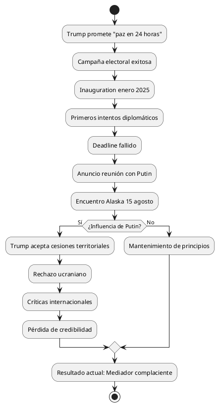

El Viraje de Trump: Del "Pacificador en 24 Horas" al Mediador de Cesiones Territoriales
La Metamorfosis del Discurso Trumpiano
El presidente Donald Trump, quien durante su campaña electoral de 2024 se presentó como el líder capaz de resolver el conflicto ruso-ucraniano "en 24 horas", ha experimentado una transformación radical en su aproximación al conflicto. Tras su encuentro con Vladimir Putin en Alaska el 15 de agosto de 2025, Trump ha comenzado a favorecer un plan que requiere que Ucrania ceda territorio a Rusia.
Contexto Histórico de las Promesas Electorales
Durante la campaña electoral de 2024, Trump prometió repetidamente que podría terminar la guerra de Ucrania en cuestión de horas, posicionándose como un negociador supremo capaz de lograr lo que otros no habían conseguido. Esta retórica grandilocuente se ha desmoronado ante la complejidad geopolítica real.
El Encuentro de Alaska: Un Punto de Inflexión Geopolítico
Los Hechos del 15 de Agosto de 2025
El encuentro entre Trump y Putin tuvo lugar en Joint Base Elmendorf-Richardson en Anchorage, Alaska, durando aproximadamente tres horas. Aunque ambos líderes declararon haber hecho "gran progreso", no se anunció ningún avance concreto hacia un alto al fuego.
Las Propuestas Post-Reunión
Según reportes del New York Times citando funcionarios europeos, Trump ahora apoya un plan de paz basado en que Ucrania "ceda territorio no conquistado" a Rusia. Este cambio fundamental representa un alejamiento dramático de sus promesas de campaña.
Análisis Crítico: De Héroe a Mediador Complaciente
La Evolución del Discurso
| Período | Promesa | Realidad Actual |
|---|---|---|
| Campaña 2024 | "Terminaré la guerra en 24 horas" | Reunión de 3 horas sin acuerdo |
| Enero 2025 | "Soy el único que puede negociar con Putin" | Acepta demandas territoriales rusas |
| Agosto 2025 | "Haré un gran acuerdo" | Propone cesiones territoriales ucranianas |
La Traición a las Expectativas
La transformación de Trump de autoproclamado "pacificador instantáneo" a defensor de concesiones territoriales revela:
- Ingenuidad geopolítica inicial: La subestimación de la complejidad del conflicto
- Susceptibilidad a la influencia rusa: El impacto evidente del encuentro con Putin
- Abandono de principios democráticos: La aceptación de la anexión territorial por la fuerza
Reacciones y Resistencias
La Posición Ucraniana
El presidente Zelensky ha sido categórico en rechazar cualquier cesión territorial, declarando que Ucrania "no dará tierra al ocupante". Esta resistencia ucraniana expone la desconexión entre las propuestas trumpianas y la realidad del país invadido.
Críticas Internacionales
Expertos en política exterior y algunos republicanos han advertido que presionar a Ucrania para que ceda territorio recompensaría a Putin.
Ganadores y Perdedores: Un Análisis Estratégico
GANADORES del Plan Trump
Vladimir Putin
- Legitimación internacional de sus conquistas territoriales
- Precedente peligroso para futuras agresiones
- División de la alianza occidental
China
- Precedente territorial para futuras reclamaciones (Taiwán)
- Debilitamiento del orden internacional basado en reglas
PERDEDORES del Plan Trump
Ucrania
- Pérdida territorial sin compensación
- Legitimación de la agresión rusa
- Abandono por parte de su principal aliado
Orden Internacional
- Erosión del principio de integridad territorial
- Debilitamiento del derecho internacional
- Incentivo para agresores futuros
Estados Unidos
- Pérdida de credibilidad como garante de la democracia
- Deterioro de las alianzas estratégicas
- Daño reputacional a largo plazo
Diagrama de Flujo: La Degradación de la Posición Trumpiana

Consecuencias Geopolíticas a Largo Plazo
Precedentes Peligrosos
La aceptación de cesiones territoriales bajo presión militar establece precedentes que podrían:
- Alentar a China respecto a Taiwán
- Incentivar otras agresiones territoriales
- Erosionar el sistema internacional de posguerra
Impacto en las Alianzas
La OTAN y la UE enfrentan un dilema fundamental: seguir el liderazgo estadounidense hacia concesiones inaceptables o mantener principios que Trump ha abandonado.
Tabla Comparativa: Promesas vs. Realidad
| Aspecto | Promesa Electoral | Realidad Agosto 2025 | Brecha |
|---|---|---|---|
| Tiempo de resolución | 24 horas | 7+ meses sin solución | ∞ |
| Método | Negociación victoriosa | Cesión territorial | 180° |
| Beneficiario principal | Ucrania/Democracia | Rusia/Autocracia | Opuesto |
| Costo para EEUU | Ninguno | Credibilidad perdida | Alto |
| Resultado para Putin | Derrota diplomática | Victoria estratégica | Opuesto |
El Factor Putin: Análisis de la Influencia
Técnicas de Persuasión Empleadas
Putin, veterano de la KGB y maestro de la manipulación psicológica, probablemente empleó:
- Halago estratégico: Apelando al ego trumpiano
- Presión temporal: Creando urgencia artificial
- Marcos narrativos: Reenmarcando la agresión como "conflicto territorial"
- Concesiones superficiales: Ofreciendo victorias aparentes
La Susceptibilidad de Trump
La personalidad de Trump presenta vulnerabilidades evidentes:
- Necesidad de reconocimiento como "dealmaker"
- Susceptibilidad a la adulación
- Preferencia por soluciones simples a problemas complejos
- Histórico desprecio por aliados tradicionales
Implicaciones para la Democracia Global
El Mensaje Enviado
La posición actual de Trump transmite señales devastadoras:
- Las democracias no defenderán firmemente a sus aliados
- La agresión militar puede ser recompensada con negociaciones
- Los compromisos internacionales son negociables bajo presión
Erosión del Liderazgo Moral
Estados Unidos, tradicionalmente el garante del orden liberal internacional, se convierte en facilitador de la anexión territorial, socavando décadas de diplomacia y principios.
Alternativas Ignoradas
Opciones No Exploradas
Trump podría haber considerado:
- Fortalecimiento de Ucrania: Aumentando la ayuda militar hasta lograr ventaja
- Presión económica máxima: Intensificando sanciones a Rusia
- Aislamiento diplomático: Coordinando con aliados para aislar a Putin
- Garantías de seguridad: Ofreciendo protección robusta a cambio de neutralidad
Por Qué No Se Adoptaron
La preferencia trumpiana por la gratificación inmediata y el reconocimiento personal impidió estrategias más complejas pero efectivas.
Análisis de Stakeholders
Actores Internos
Congreso Estadounidense
- Republicanos: División entre trumpistas y defensores tradicionales de la democracia
- Demócratas: Oposición unánime a las cesiones territoriales
Opinión Pública
- Base trumpiana: Confundida entre lealtad personal y principios tradicionales
- Resto del electorado: Crecientemente crítica de la posición
Actores Internacionales
Aliados Europeos
- Reino Unido: Resistencia firme a cesiones territoriales
- Polonia/Bálticos: Alarma extrema por precedentes
- Alemania/Francia: Dilema entre liderazgo estadounidense y principios
Adversarios
- China: Observando atentamente para aplicar lecciones a Taiwán
- Irán: Evaluando debilidad occidental percibida
Proyecciones y Escenarios Futuros
Escenario 1: Implementación del Plan Trump
- Ucrania cede territorio bajo presión estadounidense
- Putin consolida ganancias y planea próxima agresión
- OTAN se fractura sobre principios fundamentales
- China acelera planes sobre Taiwán
Escenario 2: Resistencia Ucraniana Exitosa
- Zelensky rechaza plan y busca apoyo europeo directo
- Estados Unidos se aísla de aliados tradicionales
- Conflicto se prolonga sin resolución estadounidense
- Credibilidad de Trump colapsa completamente
Escenario 3: Rectificación Trumpiana
- Trump reconoce error y endurece posición
- Restablecimiento gradual de credibilidad
- Putin pierde ventaja diplomática obtenida
- Conflicto continúa pero con unidad occidental restaurada
Lecciones Históricas Ignoradas
Múnich 1938: Ecos Perturbadores
La propuesta de cesión territorial recuerda peligrosamente el apaciguamiento de Hitler:
- Cesiones territoriales como "precio de la paz"
- Subestimación de ambiciones expansionistas
- Esperanza ilusoria de satisfacer a agresores
Yalta 1945: División de Europa
La aceptación de esferas de influencia rusa evoca la división de Europa post-Segunda Guerra Mundial, pero ahora sin la justificación de la victoria aliada.
Evaluación Psicológica: El Colapso del Mito del "Dealmaker"
Análisis del Cambio de Narrativa
Trump ha transitado de:
- "Art of the Deal" → "Art of the Surrender"
- Negociador supremo → Facilitador de agresión
- Defensor de América → Servidor de intereses rusos
Mecanismos de Defensa Psicológica
Ante el fracaso evidente, Trump probablemente empleará:
- Racionalización: "Era la única opción realista"
- Proyección: Culpar a Ucrania por "inflexibilidad"
- Distorsión: Presentar cesiones como "victorias"
Impacto en el Sistema Internacional
Transformación del Orden Global
La posición trumpiana acelera la transición hacia:
- Multipolaridad autoritaria: Rusia y China como poderes regionales legitimados
- Erosión del derecho internacional: Principios subordinados a "realismo"
- Fragmentación occidental: OTAN y alianzas debilitadas
Nuevas Alianzas Emergentes
Ante el abandono estadounidense, pueden emerger:
- Coalición europea independiente: Liderazgo franco-alemán-polaco
- Eje autoritario: Consolidación Rusia-China-Irán
- Bloques regionales: Fragmentación del orden global
Recomendaciones Estratégicas
Para Aliados Democráticos
- Coordinación independiente: Desarrollo de capacidades autónomas de respuesta
- Presión económica sostenida: Mantenimiento de sanciones sin liderazgo estadounidense
- Apoyo directo a Ucrania: Compensación por abandono estadounidense
Para el Congreso Estadounidense
- Limitación del poder presidencial: Restricciones legislativas a cesiones territoriales
- Refuerzo de alianzas: Iniciativas bipartidistas para restaurar credibilidad
- Supervisión estricta: Monitoreo de negociaciones presidenciales
Conclusión: El Legado de una Traición Histórica
La evolución de Trump desde autoproclamado pacificador instantáneo hasta facilitador de cesiones territoriales representa una de las mayores traiciones a los principios democráticos en la historia estadounidense moderna. Su transformación revela no solo la influencia corrosiva del autoritarismo ruso, sino también las vulnerabilidades fundamentales de un sistema que permite que las ambiciones personales prevalezcan sobre los intereses nacionales y los principios democráticos.
El Costo de la Ingenuidad
La promesa inicial de "resolver el conflicto en 24 horas" no era solo retórica electoral irresponsable, sino una demostración peligrosa de incomprensión geopolítica que Putin ha explotado magistralmente.
El Precio de la Complacencia
Al aceptar las demandas territoriales rusas, Trump no solo traiciona a Ucrania, sino que socava décadas de construcción del orden internacional liberal, estableciendo precedentes que resonarán durante generaciones.
Un Futuro Incierto
El daño a la poca credibilidad estadounidense y al sistema internacional puede ser irreversible. La historia juzgará este período como el momento en que Estados Unidos, bajo el liderazgo de Trump, eligió la expedición política sobre los principios fundamentales, transformándose de garante de la democracia global en facilitador de la agresión autoritaria.
La transformación está completa: el supuesto maestro del "Art of the Deal" se ha revelado como un amateur fácilmente manipulado, vendiendo no solo territorio que no le pertenece, sino los principios mismos sobre los que se construyó el orden internacional de posguerra.